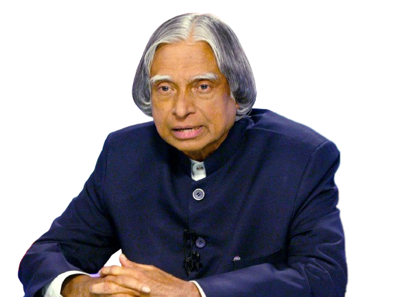

-A. P. J. Abdul Kalam
Abdul Kalam was an Indian scientist and politician who served as the 11th President of India from 2002 to 2007. He was born on October 15, 1931, in Rameswaram, Tamil Nadu, and studied physics and aerospace engineering. Dr. Kalam is known as the "Missile Man of India" for his significant contributions to the development of India's missile program. He received numerous awards and honors during his lifetime, including the Bharat Ratna, India's highest civilian award. Dr. Kalam was a popular and beloved figure in India, known for his humility, integrity, and dedication to public service. He passed away on July 27, 2015, while delivering a lecture at the Indian Institute of Management Shillong.